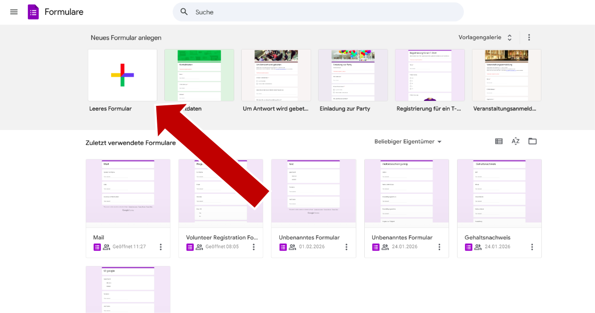
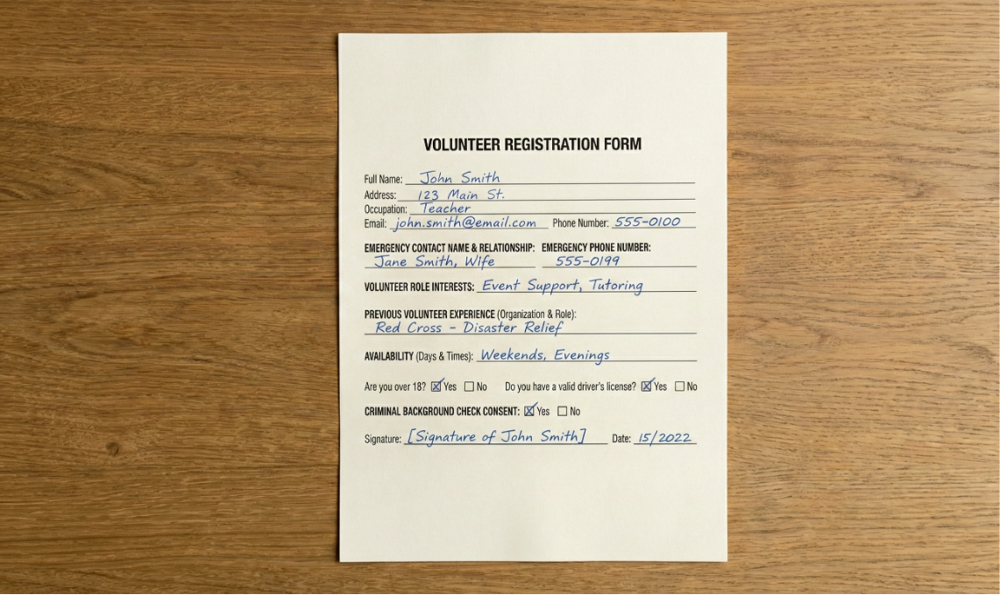
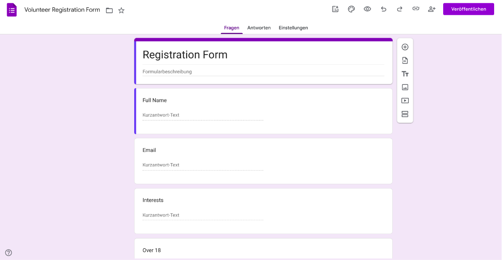
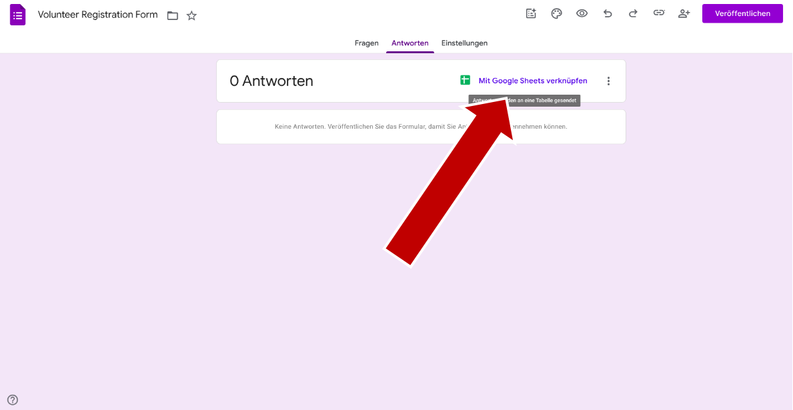
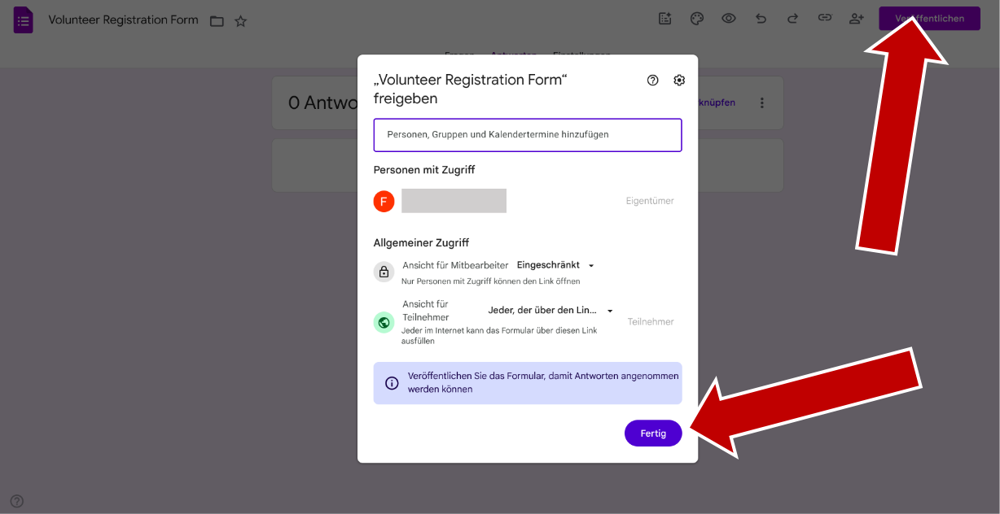
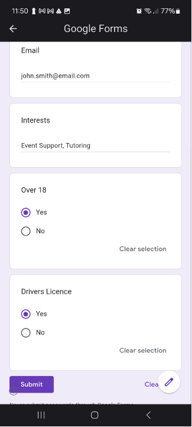
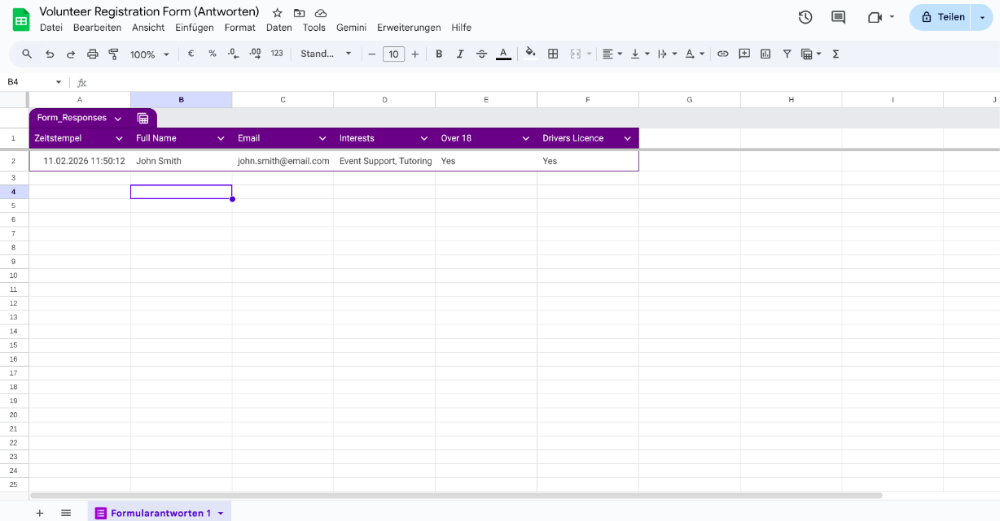
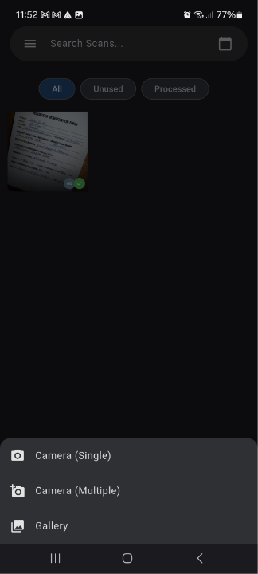
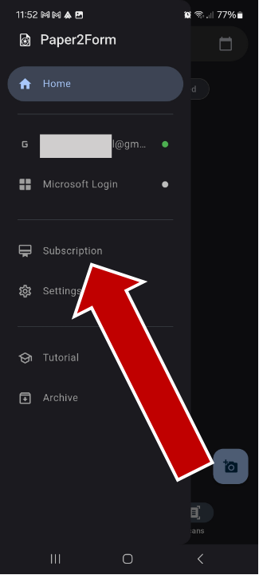

Create Form
1. Go to https://docs.google.com/forms.
2. Create a new empty form.
3. Create fields for the information you need from your paper documents. You can recreate all the fields from your physical form here, or you can pursue a more generalized unstructured approach. For example, you could create a Form for physical mail where one of your fields is "Summary of Content", and the AI will automatically summarize the letter you received.
For this example, we'll stay with a more structured form. We want to digitize the answers to a volunteer registration form, so we create a field for every question in the paper form that is relevant to us.
 4. We want to have all documents listed in a table, so in the responses tab click on "Link to Sheets" and select either a new or an already existing Sheets document.
5. After that, just click "Send" or ensure permissions are set. If the person using the Paper2Form App is not the author of the Form, ensure they have access by adding their Gmail address or keeping the form public. Also, if they are not the author, you need to copy the link and send it to them.
Import Form
1. In the Paper2Form app, you need to login with your Google Account two times. First with the Google Authentication dialogue and then in the WebView.
2. To add the Form we just created, select it by browsing your forms if you're the author. If not, paste the link of the form here.
Scan Document
1. Now you can fill out your form. Manual Fill lets you type in the form by hand. Single Scan is the fastest, it just takes one photo and fills out the form. If your document has multiple pages, or you want to process multiple documents in parallel, you can choose "Scan (Multiple)".

2. Once the photos are processed, you can verify and correct any possible mistakes and then just click on send.
3. The responses will pop up immediately in the Google Sheets table.
The Scans Tab
1. The picture will also automatically be added to your scan tab.
2. Here you can take pictures when you're currently offline for later processing.

3. Or you can select images from your gallery to process.
Settings
1. In the settings, you can choose which server should process your pictures to extract the data. Your data is sent encrypted and only stays on the server for processing as long as needed before it is deleted. Your data is not used for training the AI.

2. You can also choose your theme preferences and your language.
3. Under "Performance" you can choose scan quality and resolution. Higher values will mean better results but longer processing time.

Subscription
1. Choose a subscription that fits your needs. After 5 test scans, you will have to buy a subscription to continue using the app.
2. If you plan on occasionally using the app for single documents, we recommend the Basic plan where you can process 4 documents every day.
3. If you plan on using daily with multiple documents, we recommend Premium where you can process 40 documents every day.
4. If you're in an office where you need to process many documents from many sources, or you're the person many documents need to go through every day, the Business plan is right for you.
5. If you plan on digitizing a larger backlog of paper documents, or have infrequent spikes in usage, we recommend the Enterprise plan.